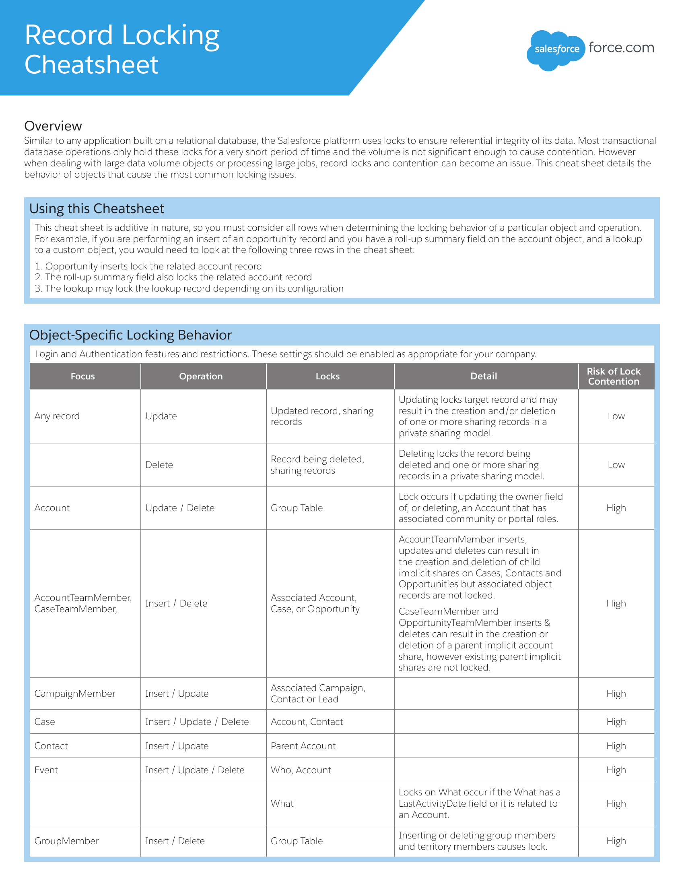
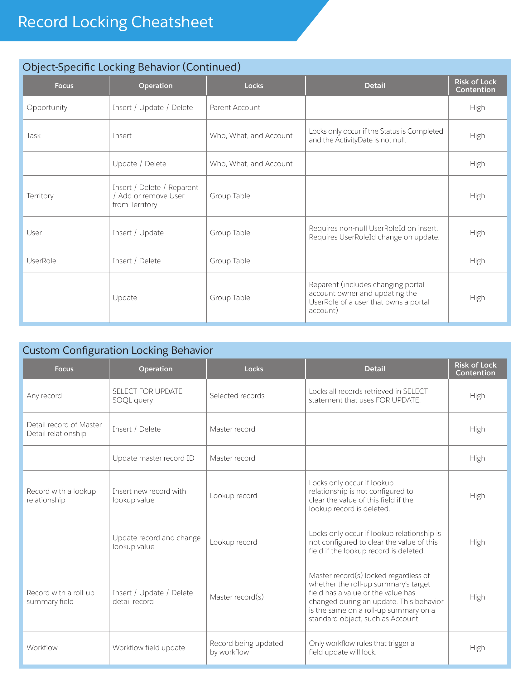
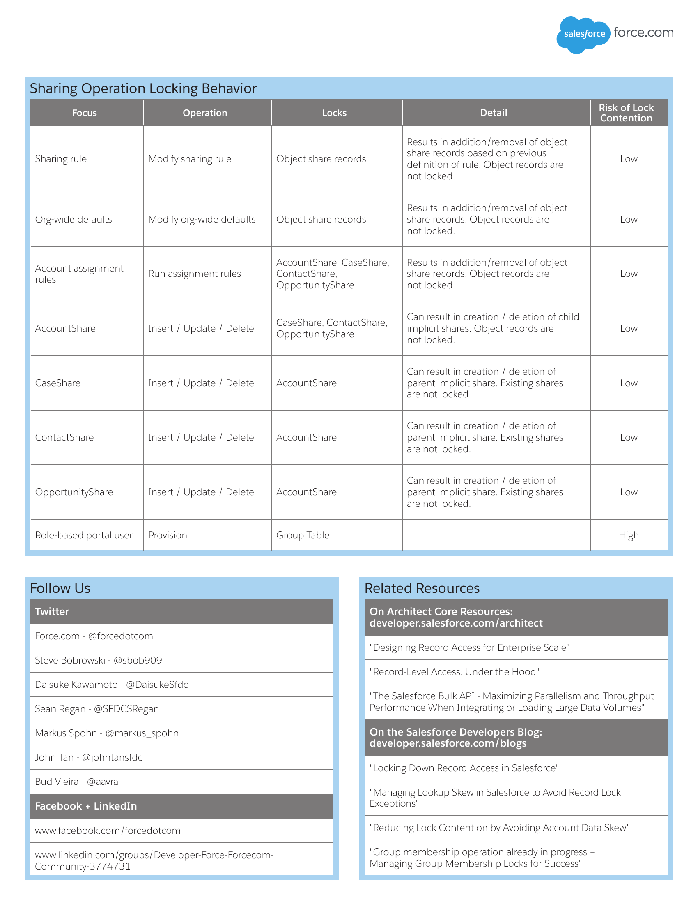

PostgreSQL, commonly referred to as Postgres, implements record-level locking through its **Multi-Version Concurrency Control (MVCC)** system.
In MVCC, each transaction operates on **a snapshot of the database** at a specific point in time, allowing for concurrent reads and writes without blocking each other. However, to maintain data consistency and prevent conflicts, PostgreSQL employs various locking mechanisms, including record-level locks.
Here's how PostgreSQL implements record-level locks:
1. **Row-Level Locks**: PostgreSQL provides support for row-level locking, allowing transactions to lock individual rows in a table. This is achieved through the `FOR UPDATE` and `FOR SHARE` clauses in SQL statements like `SELECT`.
- `FOR UPDATE`: Acquires an exclusive lock on selected rows, preventing other transactions from modifying or acquiring locks on those rows until the transaction holding the lock is committed or rolled back.
- `FOR SHARE`: Acquires a shared lock on selected rows, allowing other transactions to read but not modify those rows until the transaction holding the lock is committed or rolled back.
2. **Tuple-Level Locks**: Internally, PostgreSQL uses tuple-level locks (also known as row-level locks) to implement record-level locking. These locks are associated with individual tuples (rows) within tables and are managed by the PostgreSQL backend processes.
3. **Lock Modes**: PostgreSQL supports different lock modes, including shared, exclusive, and update locks. These lock modes determine the level of access permitted by concurrent transactions.
4. **Deadlock Detection**: PostgreSQL includes mechanisms to detect and resolve deadlocks, which can occur when transactions wait indefinitely for locks held by other transactions. When a deadlock is detected, PostgreSQL automatically aborts one of the involved transactions to resolve the deadlock and allow the remaining transactions to proceed.
5. **Lock Escalation**: In some cases, PostgreSQL may escalate row-level locks to coarser-grained locks (e.g., table-level locks) to reduce overhead and contention. However, PostgreSQL typically tries to minimize lock escalation to maintain concurrency.
Overall, PostgreSQL's record-level locking mechanisms, combined with its MVCC system, provide a balance between concurrency and data consistency, allowing multiple transactions to operate on the database concurrently while preventing conflicts and ensuring data integrity.
## Introduction
- **Record/Row Locks:** Mechanism used in database management systems to control access to individual rows of data within a table.
- **Importance:** Essential for maintaining data integrity and consistency in multi-user environments.
## Types of Locks
- **Shared Locks:** Allow multiple transactions to read a row simultaneously.
- **Exclusive Locks:** Restrict access to a row to only one transaction for writing.
- **Intent Locks:** Indicate the intention of a transaction to acquire further locks on a resource.
- **Row-Level Locks:** Lock individual rows of a table.
- **Table-Level Locks:** Lock entire tables, impacting all rows within them.
## Why Do We Need Record Locks?
- **Prevent Data Corruption:** Ensures that concurrent transactions do not interfere with each other, avoiding data inconsistencies.
- **Maintain Data Integrity:** Guarantees that transactions see consistent views of the data during read and write operations.
## Acquiring and Releasing Locks
- **Acquisition:** Transactions acquire locks on rows or tables before performing operations like reading or modifying data.
- **Release:** Locks are released after the transaction completes its operation, allowing other transactions to access the locked resource.
## Deadlocks
- **Definition:** Occurs when two or more transactions are waiting for locks held by each other, resulting in a circular dependency.
- **Causes:** Competing for resources in a different order, lack of proper lock management.
- **Resolution:** Oracle database detects deadlocks and automatically resolves them by rolling back one of the transactions involved.
## Lock Escalation
- **Definition:** Process where the granularity of locks is escalated from row-level to table-level due to resource contention.
- **Occurs:** When a large number of row-level locks are acquired, impacting system performance.
- **Impact:** Can reduce concurrency and increase contention, affecting scalability.
## Monitoring Locks
- **Tools:** Oracle Enterprise Manager, Oracle SQL Developer, custom scripts using dynamic performance views.
- **Lock Wait Events:** Events in Oracle database indicating processes waiting for locks to be released.
- **Dynamic Performance Views:** Queries against views like V$LOCK and V$SESSION to monitor active locks.
## Best Practices for Managing Locks
- **Optimizing SQL:** Use efficient SQL statements to minimize lock contention, avoid unnecessary locking.
- **Transaction Isolation Levels:** Choose appropriate isolation levels to balance concurrency and consistency requirements.
- **Transaction Duration:** Keep transactions short to minimize the duration of locks, reducing contention.
## Case Study: Real-world Example
- **Scenario:** A banking application updating account balances concurrently.
- **Locking Strategy:** Implement row-level locks to prevent concurrent updates to the same account balance.
- **Oracle Handling:** Automatically manages locks to ensure data integrity and prevent conflicts.
## Conclusion
- **Recap:** Record/row locks are crucial for maintaining data integrity and consistency in multi-user database environments.
- **Importance:** Understanding lock types, monitoring techniques, and best practices is essential for efficient database management.
- **Further Learning:** Explore Oracle documentation, training resources, and community forums for deeper understanding.
## References
- [Automatic Locks in DML Operations](https://docs.oracle.com/cd/E18283_01/server.112/e17118/ap_locks001.htm)
# Understanding Row/Record Locks in Salesforce
## Introduction
- **Row/Record Locks:** Mechanism used in Salesforce to control access to individual records within the platform.
- **Key Aspect:** Essential for maintaining data integrity and preventing data corruption in a multi-user environment.
## Types of Locks
- **Shared Locks:** Allow multiple users to read a record simultaneously.
- **Exclusive Locks:** Restrict access to a record to only one user for editing.
- **Record-Level Locks:** Apply to individual records, ensuring data consistency during updates.
- **System Locks:** Used by Salesforce internally for platform operations and maintenance.
## Why Do We Need Record Locks?
- **Prevent Data Loss:** Ensures that concurrent transactions do not overwrite each other's changes, avoiding data loss.
- **Maintain Data Integrity:** Guarantees that transactions see consistent views of the data during read and write operations.
## Acquiring and Releasing Locks
- **Acquisition:** Users acquire locks on records before performing operations like editing or deleting data.
- **Release:** Locks are released automatically after the transaction completes its operation, allowing other users to access the locked record.
## Impact of Locks
- **Concurrency:** Lock contention can impact system performance by reducing concurrency.
- **Deadlocks:** Occur when two transactions are waiting for locks held by each other, resulting in a circular dependency.
- **Lock Duration:** Long-held locks can delay other users' access to records, affecting user experience.
## Monitoring Locks
- **Tools:** Salesforce Inspector, Workbench, custom Apex code using system methods.
- **Locking Information:** Access detailed locking information through system logs, debug logs, and platform events.
- **Lock Wait Time:** Monitor lock wait times to identify potential bottlenecks and optimize performance.
## Best Practices for Managing Locks
- **Bulk Processing:** Use bulk processing techniques to minimize the number of record locks acquired.
- **Transaction Isolation Levels:** Choose appropriate isolation levels to balance concurrency and consistency requirements.
- **Asynchronous Processing:** Offload long-running processes to asynchronous Apex to reduce lock contention.
## Case Study: Real-world Example
- **Scenario:** A Salesforce application updating Opportunity records concurrently.
- **Locking Strategy:** Implement record-level locks to prevent concurrent updates to the same Opportunity record.
- **Salesforce Handling:** Automatically manages locks to ensure data integrity and prevent conflicts.
## Conclusion
- **Importance:** Row/record locks are critical for maintaining data integrity and consistency in Salesforce applications.
- **Understanding:** Familiarity with lock types, monitoring techniques, and best practices is essential for efficient Salesforce development.
- **Continued Learning:** Stay updated with Salesforce documentation, trailhead modules, and community forums for advanced lock management techniques.
## Locking statements
- For example in Apex: in addition to querying for two accounts, also locks the accounts that are returned
```
Account [] accts = [SELECT Id FROM Account LIMIT 2 FOR UPDATE];
// You can not use the ORDER BY keywords in any SOQL query that uses locking.
```
- While the records are locked by a client, the locking client can modify their field values in the database in the same transaction.
- Other clients **have to wait until the transaction completes** and the records are no longer locked before being able to update the same records.
- Other clients can still **query the same records while they are locked**.
- If you attempt to lock a record currently locked by another client, your process waits a **maximum of 10 seconds for the lock to be released before acquiring a new lock**.
- If the wait time exceeds 10 seconds, a **QueryException** is thrown.
- Similarly, if you attempt to update a record currently locked by another client and the lock is not released within a maximum of 10 seconds: a **DmlException** is thrown.
- If a client attempts to **modify a locked record**, the update operation can succeed if the lock gets released within a short amount of time after the update call was made.
- In this case, it is possible that the updates overwrite changes made by the locking client if the second client obtained an **old copy** of the record.
- To prevent the overwrite from happening, the second client must lock the record first.
- The locking process returns a fresh copy of the record from the database through the SELECT statement.
- The second client can use this copy to make new updates.
- The record locks that are obtained in Apex via **FOR UPDATE** clause are automatically released when making callouts.
- The information is logged in the debug log and the logged message includes the most recently locked entity type.
- For example: FOR_UPDATE_LOCKS_RELEASE FOR UPDATE locks released due to a callout. The most recent lock was Account.
- Use caution while making callouts in contexts where FOR UPDATE queries could have been previously executed.
- When you perform a DML operation on one record, related records are locked in addition to the record in question.
## Avoiding Deadlocks
Avoiding Deadlocks
- Apex has the possibility of deadlocks, as does any other procedural logic language involving updates to multiple database tables or rows.
- To avoid such deadlocks, the Apex runtime engine:
- First locks sObject parent records, then children.
- Locks sObject records in order of ID when multiple records of the same type are being edited.
- As a developer, use care when locking rows to ensure that you are not introducing deadlocks. Verify that you are using standard deadlock avoidance techniques by accessing tables and rows in the same order from all locations in an application.
## Locking in a SOQL For Loop
```
// makes calls to the query() and queryMore() methods in the SOAP API.
for (Account[] accts : [SELECT Id FROM Account FOR UPDATE]) {
// Your code
}
// Note that there is no commit statement.
// If your Apex trigger completes successfully, any database changes are automatically committed
// If your Apex trigger does not complete successfully, any changes made to the database are rolled back.
```
## Example

|Operation|Comments|Salesforce|
|---|---|---|
|Like to update 10,000 Contacts in Salesforce|push the updates in batches of 200, serially and **they are ordered by parent Account**| Lock the contacts (200 of them) in the batch|
|||Lock the parent Accounts for those 200 contacts|
|||Group the Contacts by those that share the **same parent Account** and then process them as a single transaction via single update to the parent Account|
|||If Platform can not obtain a lock on the parent Account record, the whole transaction fails and an error is issued for each Contact in that transaction.|
||If we do not order our data by parent, we increase the number of locks, and with it the potential for record locking issues.|If Platform can lock that parent Account, but **not for one of the contacts in the transaction**, the update fails for that one Contact only.|
||**Incase of Parallel loading**: Let's say we have 3 contacts that belong to the same parent Account in the dataset. Because they are unordered, each of those 3 contacts land in a different batch (since we loading the batches in parallel), Platform will try to lock the parent Account 3 times at once, by 3 different processes. None can get the lock, and all 3 fail, or one gets the lock and the other 2 fail, or all pass but after wasting time on retry cycles **slowing our load down considerably**.|||
||Solution: Sort the Contacts by parent Account. This will make all the Contacts that belong to the same Account have a **high likelihood of being in the same batch**, reducing the lock potential. Note: Platform will try to gets the lock up to 10 times|||
## Record Locking Cheat Sheet
## References
- [Locking Records](https://developer.salesforce.com/docs/atlas.en-us.apexcode.meta/apexcode/langCon_apex_locking_records.htm)
- [Salesforce Platform Record Locking and Concurrency](https://developer.salesforce.com/blogs/engineering/2014/07/record-locking-cheat-sheet)
- [Locking Down Record Access in Salesforce](https://developer.salesforce.com/blogs/engineering/2013/12/locking-down-record-access-in-salesforce)
- [Developing Data Migrations and Integrations with Salesforce: Patterns and Best Practices ](https://www.amazon.com/gp/product/1484242084/)


